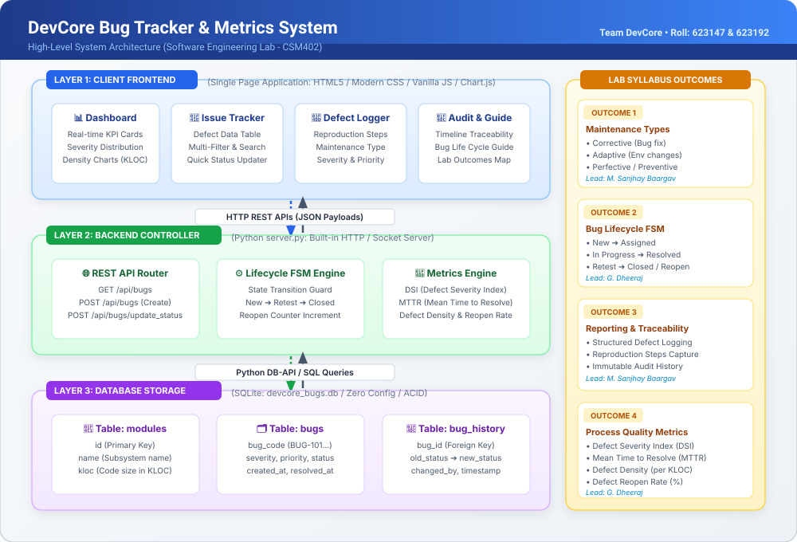

Coursework Report: Product Requirements (PRD) & Software Requirements (SRS)
Course: Software Engineering Lab (CSM402) • Project Title #12
Department: Electronics & Communication Engineering (ECE) • B.Tech 4th Year
Team: DevCore
In software engineering, maintenance represents 60% to 70% of total lifecycle costs. When software is delivered to users, unresolved defects cause downtime, poor user trust, and expensive hotfixes.
The DevCore Bug Tracker is a lightweight, zero-configuration software defect management and metrics evaluation system developed for the CSM402 lab. It provides a complete working implementation of the 4 mandatory syllabus outcomes:
To keep the system practical and easy to understand for our coursework, four key roles are identified:
| Role | Primary Lab Responsibilities | Industry / Agile Context |
|---|---|---|
| QA / Test Engineer | Finds and logs bugs with reproduction steps, tests deployed fixes, and marks tickets as Closed or Reopened. | Tester in Sprint execution. |
| Developer | Investigates root cause, develops code patches, unit tests, and moves tickets to Resolved. | Software Engineer in Development team. |
| Project Manager | Reviews incoming defects, sets Priority (P1–P4), assigns tickets to developers, and tracks release readiness. | Product Owner (PO) managing defect backlog. |
| Scrum Master (Agile Facilitator) | Does not fix bugs directly. Inspects the Metrics Dashboard (MTTR, Reopen Rate) during Sprint Retrospectives to remove team bottlenecks. | Scrum Master coaching the Agile team. |
DevCore follows a clean, 3-tier modular architecture designed with zero external runtime dependencies so it can run immediately on any standard Python 3 installation:

server.py) running built-in HTTP server, REST API dispatchers, State Machine validator, and Metrics calculations.devcore_bugs.db) with tables for modules, bugs, and bug_history.NEW → ASSIGNED → IN PROGRESS → RESOLVED → UNDER RETEST → CLOSED.REOPENED, the reopen_count is incremented, and the defect is routed back to the developer.BUG-101) and captures: Title, Module, Severity (Critical, High, Medium, Low), Priority (P1–P4), Environment, Steps to Reproduce, Expected vs. Actual behavior.bug_history with actor name, old status, new status, timestamp, and justification reason.Illustrates the primary user roles and their accessible system operations.
flowchart LR
QA["QA / Test Engineer"]
DEV["Developer"]
PM["Project Manager"]
subgraph DevCore_System ["DevCore Bug Tracker & Metrics System"]
UC1(["Log Bug & Steps (Outcome 3)"])
UC2(["Classify Maintenance Type (Outcome 1)"])
UC3(["Assign Bug to Developer"])
UC4(["Fix Bug & Update Status (Outcome 2)"])
UC5(["Retest & Verify (Close / Reopen)"])
UC6(["View Audit Traceability Trail"])
UC7(["Analyze Metrics Dashboard (Outcome 4)"])
end
QA --> UC1
QA --> UC2
QA --> UC5
QA --> UC6
PM --> UC3
PM --> UC6
PM --> UC7
DEV --> UC4
DEV --> UC6
Depicts the data models, system classes, attributes, methods, and relationships.
classDiagram
class Module {
+int id
+string name
+float kloc
+string description
+get_defect_density() float
}
class Bug {
+int id
+string bug_code
+string title
+string module_name
+string maintenance_type
+string severity
+string priority
+string status
+string environment
+string steps_to_reproduce
+datetime created_at
+datetime resolved_at
+int reopen_count
+transition_to(status, actor, reason)
}
class BugHistory {
+int id
+int bug_id
+string changed_by
+string old_status
+string new_status
+datetime timestamp
}
class MetricsEngine {
+calculate_dsi() float
+calculate_mttr() float
+calculate_defect_density() dict
+calculate_reopen_rate() float
}
Module "1" -- "0..*" Bug : contains
Bug "1" -- "0..*" BugHistory : tracks
MetricsEngine ..> Bug : evaluates
Shows the sequential messaging between actors, the web frontend, and the database.
sequenceDiagram
autonumber
actor QA as QA Engineer
actor Dev as Developer
participant UI as Web Frontend
participant Server as Python Server
participant DB as SQLite DB
QA->>UI: Submit Defect (Title, Steps, Severity, Module)
UI->>Server: POST /api/bugs
Server->>DB: INSERT INTO bugs (status='New')
Server->>DB: INSERT INTO bug_history ('Created')
DB-->>Server: Success (BUG-101)
Server-->>UI: 201 Created
Dev->>UI: Update status to "In Progress"
UI->>Server: POST /api/bugs/update_status
Server->>DB: UPDATE status='In_Progress'
Dev->>UI: Applies fix & updates status to "Resolved"
UI->>Server: POST /api/bugs/update_status
Server->>DB: UPDATE status='Resolved', resolved_at=NOW()
QA->>UI: Perform verification retest
alt Fix Verified
QA->>UI: Mark "Closed"
UI->>Server: POST /api/bugs/update_status (Closed)
Server->>DB: UPDATE status='Closed', closed_at=NOW()
else Defect Persists
QA->>UI: Mark "Reopened"
UI->>Server: POST /api/bugs/update_status (Reopened)
Server->>DB: UPDATE status='Reopened', reopen_count++
end
UI->>Server: GET /api/metrics
Server->>DB: Query DSI, MTTR, Defect Density
DB-->>Server: Raw values
Server-->>UI: JSON Metrics & Chart Data
Finite state machine with defined guard transitions preventing improper state skipping.
stateDiagram-v2
[*] --> NEW : Defect Logged by QA
NEW --> ASSIGNED : Manager Assigns Dev
ASSIGNED --> IN_PROGRESS : Developer Starts Debugging
IN_PROGRESS --> RESOLVED : Patch Committed
RESOLVED --> UNDER_RETEST : QA Retests in Staging
UNDER_RETEST --> CLOSED : Fix Verified (Success)
UNDER_RETEST --> REOPENED : Bug Persists (Fail)
REOPENED --> IN_PROGRESS : Re-assigned for Rework
CLOSED --> [*] : Finalized Ticket
Step-by-step procedural workflow showing decisions, retest loops, and metric updates.
flowchart TD
Start([Start]) --> A[QA Finds Bug during Execution]
A --> B[Record Steps to Reproduce & Environment]
B --> C[Classify Maintenance: Corrective/Adaptive/Perfective/Preventive]
C --> D[Submit Bug (status = NEW)]
D --> E[Manager Assigns to Developer]
E --> F[Developer Investigates & Authors Patch]
F --> G[Developer Marks Status as RESOLVED]
G --> H[QA Pulls Build for Retest]
H --> I{Does the Defect Still Persist?}
I -- Yes (Fail) --> J[Mark Status as REOPENED]
J --> K[Increment Reopen Count & Add Comment]
K --> F
I -- No (Pass) --> L[Mark Status as CLOSED]
L --> M[Capture Final Timestamp in Audit Trail]
M --> N[Metrics Engine Automatically Re-computes DSI & MTTR]
N --> EndNode([End / Defect Closed])
Relational database schema implemented in devcore_bugs.db.
erDiagram
MODULES {
INTEGER id PK
TEXT name UK
REAL kloc
TEXT description
}
BUGS {
INTEGER id PK
TEXT bug_code UK
TEXT title
TEXT module_name FK
TEXT maintenance_type
TEXT severity
TEXT priority
TEXT status
TEXT steps_to_reproduce
DATETIME created_at
DATETIME resolved_at
DATETIME closed_at
INTEGER reopen_count
}
BUG_HISTORY {
INTEGER id PK
INTEGER bug_id FK
TEXT changed_by
TEXT old_status
TEXT new_status
TEXT comment
DATETIME timestamp
}
MODULES ||--o{ BUGS : "categorizes"
BUGS ||--o{ BUG_HISTORY : "tracks"
The core highlight of our project is the dynamic calculation of standard software engineering metrics:
DSI = [(4 × Critical) + (3 × High) + (2 × Medium) + (1 × Low)] / Total DefectsDSI = [(2×4) + (1×3) + (1×2) + (2×1)] / 6 = (8 + 3 + 2 + 2) / 6 = 15 / 6 = 2.50MTTR = (Σ Resolution Time of Resolved Bugs) / Total Resolved BugsMTTR = (10+14+18)/3 = 14.0 hours.
Defect Density = Total Defects in Module / Codebase Size in KLOC3 / 6.8 = 0.44 defects / KLOC.
Reopen Rate = (Total Reopened Defects / Total Closed or Resolved Defects) × 100(1 / 5) × 100 = 20.0%.
| Test ID | Feature Under Test | Input / Action | Expected Output | Status |
|---|---|---|---|---|
| TC-01 | Defect Logging & Maintenance Tagging | Fill defect form, select "Billing Gateway" and "Corrective". | Bug created with status = NEW, code generated, audit entry saved. |
✅ Pass |
| TC-02 | Lifecycle State Guard | Developer moves ticket from NEW → IN PROGRESS → RESOLVED. |
State transitions succeed; resolved_at timestamp recorded. |
✅ Pass |
| TC-03 | Reopen Loop Verification | QA rejects fix on retest and selects REOPENED. |
Status updates to REOPENED; reopen_count increments by 1. |
✅ Pass |
| TC-04 | Automated Metrics Calculation | Navigate to Dashboard tab after modifying bug severities. | DSI, MTTR, and Defect Density cards and charts refresh dynamically. | ✅ Pass |
DevCore Bug Tracker • CSM402 Software Engineering Lab • Department of ECE
Prepared by M. Sanjhay Baargav (623147) & G. Dheeraj (623192)